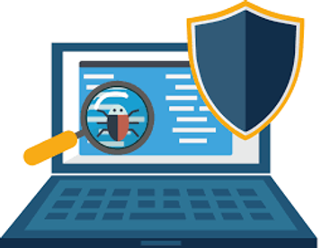

INSTALACIÓN ANTIVIRUS
¿Por qué instalar software antivirus?
Instalar un antivirus en el ordenador protegerá tu sistema contra
programas maliciosos con los que te puedes encontrar por Internet.
Algunos virus atacan el sistema y hacen que se cuelgue. Otros
buscan información personal en el disco duro, como números de
tarjetas de crédito, y los transmiten a un hacker cuando te
conectas a Internet. Prácticamente todos los virus ralentizan el
rendimiento de tu equipo y hacen que la plataforma de operación
sea inestable. En algunos casos, los virus llegan a destruir toda
la información en el disco duro. Los programas antivirus
encuentran y eliminan estos virus antes de que puedan entrar en tu
equipo.

Instalar el antivirus desde el internet
-
Encuentra tu producto antivirus ideal en nuestra comparativa.
Dirígete al sitio web de la empresa en Internet para comprar el
programa antivirus. Algunos ofrecen versiones de prueba del
antivirus de forma gratuita.
-
Elige el producto que quieres comprar en el menú de ofertas de
la empresa y haz clic en “Comprar ahora” o “Descargar ahora”.
-
Introduce tu tarjeta de crédito e información personal en los
campos necesarios para comprar el software y a continuación
pulsa “Enter”.
-
Sigue las instrucciones que aparecen en pantalla, haz clic en
“Sí” cuando te pregunten si deseas descargar el software en el
ordenador.
-
Espera a que se termine la descarga. Esto puede tardar unos
minutos dependiendo de la velocidad de tu conexión a Internet.
No apagues el equipo o cambies la configuración hasta que el
software haya terminado de descargarse en tu sistema.
-
Haz clic en el archivo descargado para iniciar la instalación.
El software comprobará si tu equipo cumple los requisitos
mínimos. Si tienes un programa incompatible o una versión
anterior del software en tu sistema, el programa te pedirá que
la desinstales. Sigue las instrucciones y reinicia el equipo.
-
Reinicia el software antivirus si aún no se ha abierto y haz
clic en Instalar. El programa se instalará automáticamente en la
ubicación predeterminada.
-
Espera a que el programa complete la instalación. Los detalles
se muestran en la pantalla. Durante la instalación, los mejores
antivirus como Bitdefender escanean automáticamente tu ordenador
en busca de virus.
-
Una vez se completa la instalación se mostrará un resumen del
proceso en tu pantalla. Si se ha detectado cualquier virus u
otros tipos de malware durante la instalación, el software puede
pedirte que reinicies el sistema.
Instalar el antivirus desde un disco
Inserta el CD del antivirus en la unidad de CD y ciérrala, espera
a que el menú del CD aparezca en la pantalla.
Escribe el código de seguridad del producto en los cuadros de
diálogo que aparecen en la pantalla. El código de seguridad está
impreso en la parte posterior de la caja de plástico del CD que
contiene el software antivirus.
Sigue las instrucciones que aparecen en pantalla, haz clic en “Sí”
cuando te pregunte, “¿Desea instalar este software?”
Reinicia el equipo cuando se haya completado la instalación. Esto
implica apagar y reiniciar el equipo para que la configuración del
antivirus funcione.